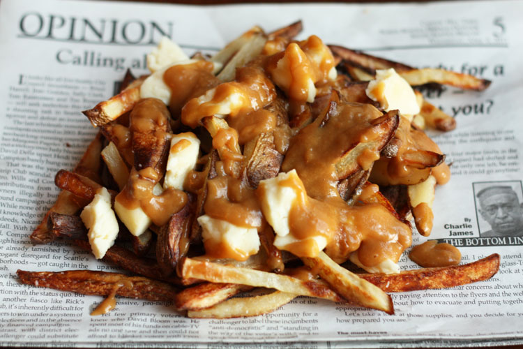

Poutine Recipe

Description
Poutine is an authentically Canadian dish. It is made by taking french fies, sprinkling them with cheese curds, and drizzling gravy over the top. This delicious recipe makes for the perfect Canadian snack.
Ingredients
- 4 small or 2 large Russet potatoes/li>
- 3 tbsp olive oil
- 2 tbsp butter, salted
- 2 tbsp all purpose flour
- 1 cup vegetable broth
- 1/2 lb cheese curds
Steps
- Preheat the oven to 450ºF.
- Scrub the potatoes and julienne with the skins left on. Place into a large bowl filled with cold water and then place into the fridge for 1 hour. This will remove some of the starch, making the french fries more crispy once baked.
- Drain the water, pat the potatoes dry and then spread onto a baking sheet. Toss with olive oil and bake for 35 - 40 minutes, turning occasionally, until golden brown and crispy.
- Heat the butter and flour in a medium saucepan on low heat until it starts to foam. With a wire whisk, slowly add in the vegetable stock stirring rapidly. Simmer for 15 minutes or until the gravy has thickened, stirring occasionally.
- Once the french fries have cooked, remove them from the oven and place onto a serving plate. Top with cheese curds and then pour gravy over top. Serve warm.